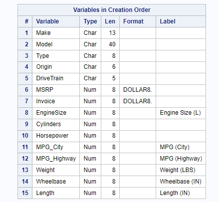
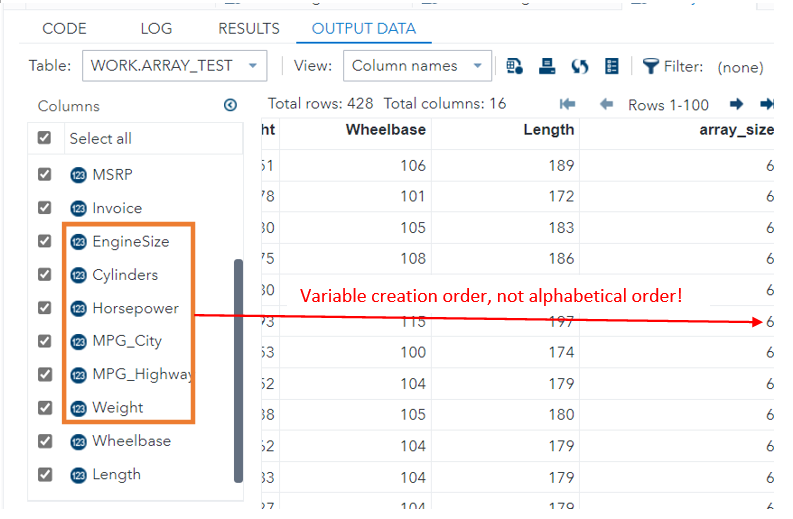
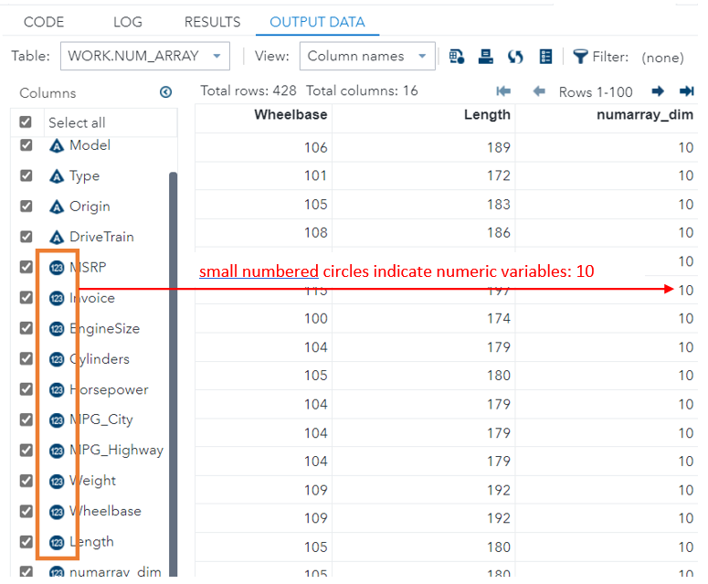
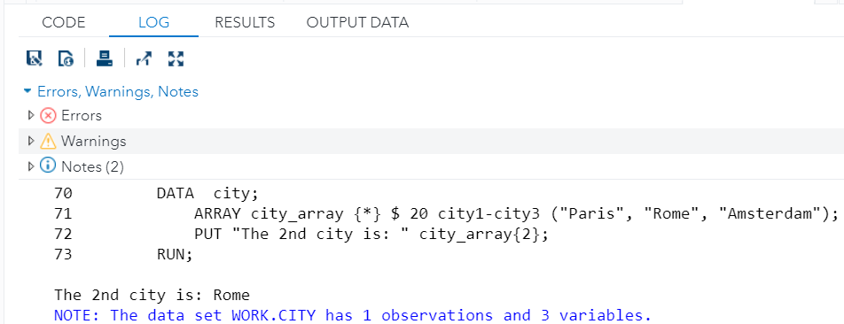
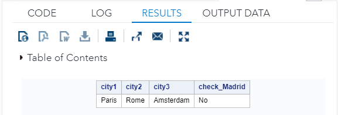
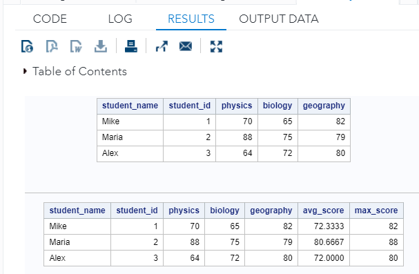
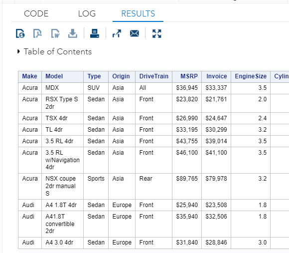
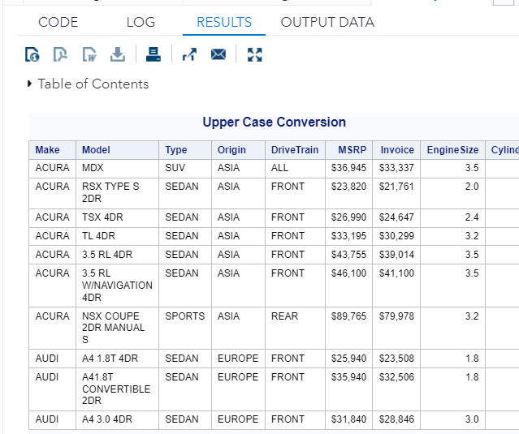
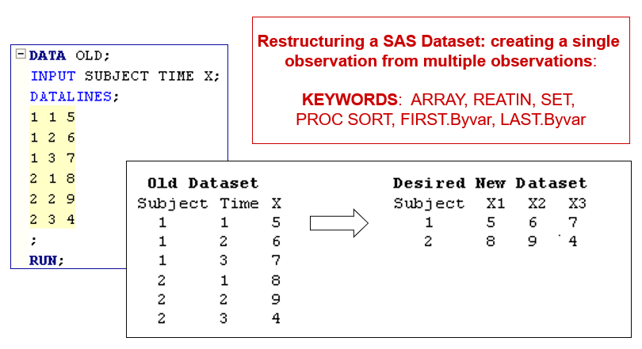
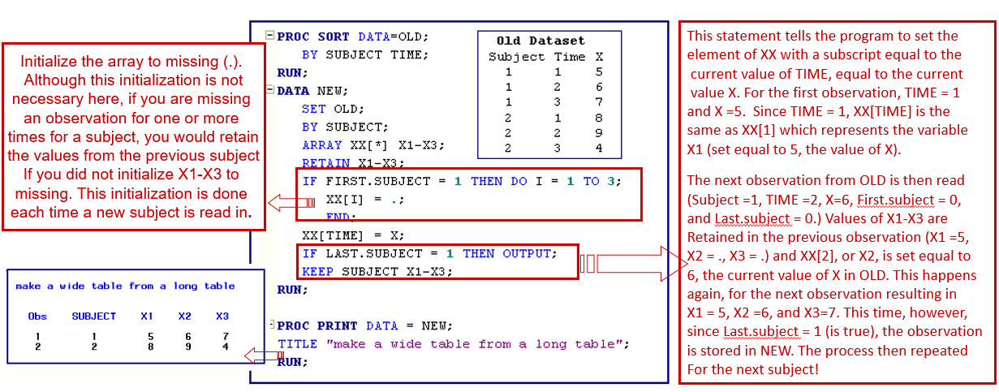

Chapter 12 SAS Arrays
In SAS, arrays are used for retrieving and storing a set of values based on an index value. The index denotes the reserved location for storing the particular value in the cell. In a SAS DATA phase, arrays provide an acceptable and simple technique to process a set of variables.
12.1 Array Syntax
The syntax of the array is given by
ARRAY array-name {n} <$> <length> <array-elements> <initial-values>;The ARRAY statement creates an array in SAS. This statement starts with the ARRAY keyword, followed by the ARRAY name, the ARRAY length, and some optional ARRAY parameters.
The ARRAY Name must be a valid SAS name. That is to say, it has a maximum length of 32 characters and starts with a letter or an underscore. Subsequent characters must be alphanumeric characters. An array name can’t contain blanks or special characters (except underscores). In addition, it can’t have the same name as any variable on the dataset. Also, although possible, you should not give your array the same name as an existing SAS function.
The ARRAY Length, a mandatory component of ARRAR, specifies the number of elements in the array and must be enclosed in braces, brackets, or parenthesis. We can use the asterisk (*) to let SAS determine the number of elements. In this case, we might even omit the specification of the array elements.
The ARRAY Type specifies whether the array is a character or a numeric array.
- By default, the elements of an array are numeric.
- We can create a character array in SAS by placing the dollar sign ($) after the length of the array.
The Elements Length - length of variables to store in an array.
- All elements in a SAS array have a default length of 8 bytes.
- For an array with numeric elements, this is enough.
- For an array with a character element of 8 bytes can only store information of at most 8 characters. If needed, we can specify the length of character elements.
The Array Elements can be existing variables or new variables. All elements must have the same type, either numeric or character.
- If the elements of the array are existing variables, then the array automatically inherits the type and length of the variables.
- If the elements of the array are new variables, SAS creates a numeric array with elements of length 8.
The Initial Values can be either numeric or character. Character strings must be enclosed in quotation marks. The list of initial values must be written between parenthesis, and the values can be separated by a blank or a comma.
Example:
ARRAY names {3} $ first_name middle_name last_name ("Eric", "Arthur", "BLAIR");ARRAY - Keyword.
names - the name of the array.
{3} - the length of the array.
**\(** - the array type: `\)` indicates a character array.
first_name middle_name last_name - three elements in the array.
(“Eric”, “Arthur”, “BLAIR”) - initial values of the array.
12.2 Methods of Specifying ARRAY Elements
Depending on the situation, several different ways can be used to specify array elements.
12.2.1 Explicit Definition
If there are a smaller number of array elements to store in an array, we can define the names of the elements explicitly.
In the above example, three variables first_name, middle_name, last_name are explicitly defined and listed.
12.2.2 Specify A Range of Elements
This is very common in practical applications in which we may have a large number of array elements (variables). To use this method, we need to name the element in a pattern so that we can define a range of the elements.
For example, consider surveying undergraduates’ starting salaries at 50 universities. We randomly select 100 recently graduated students and record their salaries in variables Univ1, Univ2, Univ3, ….., Univ50. Then we can define an array and specify the array element in the following way.
ARRAY SalarySurvey {50} Univ1 - Univ50;With a single hyphen (-), we select (for existing variables) or create (for new variables) a range of elements.
Note that, the length of the array is not necessarily specified, we can also use an asterisk (*) or simply omit the length specification since it is not mandatory in the array definition. That is, the following two array definitions are valid.
ARRAY SalarySurvey {*} Univ1 - Univ50;
ARRAY SalarySurvey Univ1 - Univ50;12.2.3 Select All Variables Between A Start and End Variable
With a double hyphen (–-) we can select a range of existing variables to form the elements of an array. If we use this method, SAS will create elements of all variables between the first and last variables.
Note: A double dash (--) is used to specify variables based on the order of the variables as they appear in the file, regardless of the name of the variables.
To explain this, we use an SAS built-in data set in SASHELP library.
DATA cars;
SET sashelp.cars;
RUN;
PROC CONTENTS DATA = cars VARNUM; /* Print out variable in creation order */
RUN;
For example, here we use a double hyphen to create a numeric array of all variables between the EngineSize and Weight variables of the CARS dataset in the SASHELP library.
DATA array_test;
SET sashelp.cars;
ARRAY height_array {*} EngineSize--Weight; /* range is based on the
vraiable (creation) order
in the data set.*/
array_size = DIM(height_array); /* This return ARRAY size*/
RUN;
12.2.4 Using Automatic Variable
There is an efficient way to create an array of all existing numeric or character variables.
With the _NUMERIC_ keyword, you can declare an array where all the numeric variables are used as elements. Like, you can use the _CHARACTER_ keyword to select all character variables as the array elements. If you use one of these keywords, it isn’t necessary to define the type and length of the array.
DATA Num_array;
SET sashelp.cars;
ARRAY num_array {*} _numeric_; /* array to store all numeric variables */
numarray_dim = DIM(num_array); /* length of array */
RUN;
12.2.5 SAS Created Elements
If we don’t specify the elements of the array with one of the methods mentioned above, SAS creates elements based on the array name. In this case, it is necessary to define the length of the array.
For example, with the ARRAY statement below, we create an array of length 6 where the elements are called height1, height2, …, height6.
DATA SAS_Auto_Def;
ARRAY height {6};
RUN;12.3 Use of Array
SAS arrays are extremely useful to create new variables and carry out repetitive operations. An array is usually used jointly with loops and related SAS functions.
In this section, we will use various examples to demonstrate the various applications using SAS arrays.
12.3.1 Referencing Elements of an Array
If we work with arrays in SAS, we need to know how to reference their elements. You access an element in an array based on its position (or index) in the array. Unlike many other programming languages, SAS starts array index variables with the value of “1”. (Many other languages such as Python start with “0”.)
To reference an element of an array, we need the array name followed by the element’s position between braces.
Example
DATA city;
ARRAY city_array {*} $ 20 city1-city3 ("Paris", "Rome", "Amsterdam");
PUT "The 2nd city is: " city_array{2};
RUN;
12.3.2 Array Operators
We can use the elements of an array to carry out arithmetic operations and as arguments for numeric and character functions. Hence, you could sum, multiply, concatenate, etc. the elements of an array.
However, two operators are especially powerful when we work with arrays, namely the IN operator and the OF operator. Here we discuss what they do and how to use them.
IN Operator
The IN operator checks if a given value is equal to the value of one of the elements of an array. You can use this operator for numeric and character values.
For example, here we check if the city_array contains the value Madrid. We create a new column check_Madrid with the answer.
DATA IN_operator;
ARRAY city_array {*} $ 20 city1-city3 ("Paris", "Rome", "Amsterdam");
IF "Madrid" IN city_array THEN check_Madrid = "Yes";
ELSE check_Madrid = "No";
RUN;
PROC PRINT DATA = IN_operator NOOBS; /* suppress obs ID numbers */
RUN;
OF Operator
We can use the OF operator when we carry out arithmetic operations. With the OF operator, SAS takes all elements of the array into account while performing the calculation. You place the OF operator within the arithmetic function followed by the array name and an asterisk between parenthesis.
DATA students;
INFILE DATALINES DLM = ",";
INPUT student_name $ student_id physics biology geography;
DATALINES;
Mike, 1, 70, 65, 82
Maria, 2, 88, 75, 79
Alex, 3, 64, 72, 80
;
RUN;
PROC PRINT DATA = students NOOBS; /* suppress obs ID numbers */
RUN;
DATA scores;
SET students;
/* define an array*/
ARRAY scores_array {*} physics--geography;
/* summary statistics with array */
avg_score = MEAN(OF scores_array(*)); /* asterisk (*) mean all values
in the array. */
max_score = MAX(OF scores_array(*));
RUN;
PROC PRINT DATA = scores NOOBS;
RUN;
12.3.3 ARRAY with Loops
If we have to perform a repetitive task, we can combine the power of the SAS array and a DO loop to make our code more efficient.
Instead of writing one line of code for each variable, we can create an array of the variables we want to modify. Then, we use the DO loop to efficiently iterate over each element of the array and carry out the desired operation.
Example We want to convert all character variables to all upper case. A brutal force approach is to do the conversion one by one (repetitive task). We can use a loop with an array to perform the conversion in a single loop. Let’s convert all character variables to upper case.
PROC PRINT DATA = sashelp.cars (obs=10) NOOBS;
RUN;
The first five variables are character variables. We next define a character array to store all five character variables and then use a loop to convert these character variables to the upper case.
DATA cars_char_upcase;
SET sashelp.cars;
/* define an array to store all character variables */
ARRAY char_array {*} _CHARACTER_;
DO i = 1 TO DIM(char_array); /* Note: DIM(char_array) = 5 */
char_array(i) = UPCASE(char_array(i)); /* each iteration converts one */
END;
RUN;
TITLE "Upper Case Conversion";
PROC PRINT DATA = cars_char_upcase (OBS=10) NOOBS;
RUN;
12.4 Reshape Data
It is common to reshape a data set in various data analyses. Consider the following data task.

The annotated code is given by

12.5 Learning Coding by Examples
This section provides more examples for practicing array operations and related procedures that are not discussed in the previous sections.
/********************************************
Topics: 1. Review of Do Block & DO Loops
2. Concepts of SAS Arrays
3. PROC TRANSPOSE
4. Temporary Arrays
5. Restructuring Tables
*********************************************/
OPTIONS PS = 65 LS = 78 NONUMBER NODATE;
/** Topic 1. More examples of DO-Loop
We have done examples of DO-block, DO-WHILE, and DO-UNTIL.
The following is an example of a DO block that uses the
explicit list of numeric or character values. */
* Example 1;
DATA SALES;
INPUT units_sold warranty $ Laptopmodel $;
DATALINES;
21 1 AT3810
34 0 AT3600
12 1 AT3600
11 0 AT3810
;
RUN;
DATA revenue;
SET sales;
IF Laptopmodel= "AT3600" THEN DO;
IF warranty = 1 THEN revenue = units_sold*(1199.99 + 39);
IF warranty = 0 THEN revenue = units_sold*1199.99;
END;
RUN;
PROC PRINT DATA = revenue;
RUN;
* Example 2;
DATA DECK;
FORMAT value $5. suit $8.;
DO value='ace','2','3','4','5','6','7','8','9',
'10','jack','queen','king';
DO suit='spades','hearts','clubs','diamonds';
OUTPUT;
END;
END;
RUN;
PROC PRINT DATA = DECK;
RUN;
/**********************************************************
Topic 2: SAS ARRAY: Basics and Structure
***********************************************************
An array is a temporary holding site for a collection
of variables upon which the same operations will be
performed. It is often difficult to find DO loops to be used
jointly with ARRAY manipulation. **/
/** Working SAS data set: family income **/
DATA faminc;
INPUT famid faminc1-faminc12 ; /* short cut of patterned variable names */
DATALINES;
1 3281 3413 3114 2500 2700 3500 3114 3319 3514 1282 2434 2818
2 4042 3084 3108 3150 3800 3100 1531 2914 3819 4124 4274 4471
3 6015 6123 6113 6100 6100 6200 6186 6132 3123 4231 6039 6215
;
RUN;
/** Task: replacing each income < 3000 with a miss value.
An inefficient approach - intuitive and understandable. **/
DATA recode_manual;
SET faminc;
IF faminc1 < 3000 THEN faminc1=.;
IF faminc2 < 3000 THEN faminc2=.;
IF faminc3 < 3000 THEN faminc3=.;
IF faminc4 < 3000 THEN faminc4=.;
IF faminc5 < 3000 THEN faminc5=.;
IF faminc6 < 3000 THEN faminc6=.;
IF faminc7 < 3000 THEN faminc7=.;
IF faminc8 < 3000 THEN faminc8=.;
IF faminc9 < 3000 THEN faminc9=.;
IF faminc10 < 3000 THEN faminc10=.;
IF faminc11 < 3000 THEN faminc11=.;
IF faminc12 < 3000 THEN faminc12=.;
RUN;
/* NOTE: heading option specifies horizontal (H) column headings */
PROC PRINT DATA = recode_manual NOOBS HEADING = H;
TITLE "Processing with a regular data step";
RUN;
/* What if you 1000 variables in a dataset, it is inefficient,
if not infeasible, to use the above data step to process the
replacement in the data set. SAS array
can be used to simplify the process! */
DATA recode_array;
SET faminc;
ARRAY Afaminc[12] faminc1-faminc12;
DO i = 1 TO 12; /* loop index */
IF Afaminc[i] < 3000 THEN Afaminc[i] = . ;
END;
DROP i;
RUN;
PROC PRINT DATA = recode_array NOOBS HEADING = H;
TITLE "Processing with an ARRAY in a data step";
RUN;
/************************************************************
Topic 3. Types of Automatic ARRAYS
*************************************************************;
/* Working Data Set */
DATA Sample_data;
INPUT x1 x2 x3 x4 $ x5 $;
DATALINES;
1 2 3 AA BB
2 3 4 AB CC
3 4 5 AC DD
4 5 6 AD EE
5 6 7 AE FF
6 7 8 AF GG
;
RUN;
/* Example 1. automatic numeric ARRAYs */
DATA NUM_ARRAY;
SET Sample_data;
* ARRAY NUMARRAY[*] x1-x3; /* explicit list of variables */
ARRAY NUMARRAY[*] _NUMERIC_; /* implicit list of all numeric variables */
DO i = 1 TO DIM(NUMARRAY);
IF NUMARRAY[i] > 3 THEN NUMARRAY[i] =.;
END;
DIMARRAY = DIM(NUMARRAY);
DROP I;
RUN;
PROC PRINT DATA = NUM_ARRAY;
RUN;
/* Example 2. automatic character ARRAYs */
DATA CHAR_ARRAY;
SET Sample_data;
ARRAY CHARARRAY[*] _CHARACTER_; /* implicit of character variables */
DO i = 1 TO dim(CHARARRAY);
CHARARRAY[i] = SUBSTR(CHARARRAY[i],1,1); /* extract the 1st character */
END;
DROP i;
RUN;
PROC PRINT DATA = CHAR_ARRAY;
RUN;
/** Example 3: temporary ARRAY: _TEMPORARY_.
A temporary array is an array that only exists for the duration
of the data step where it is defined. A temporary array is useful
for storing constant values, which are used in calculations. In a
temporary array there are no corresponding variables to identify
the array elements **/
DATA TEMP_ARRAY;
SET Sample_data;
ARRAY numvars[*] _NUMERIC_; /* The initial numeric variable */
ARRAY newvars[*] px1-px3; /* The array of new numeric variables
(placeholder) For the store the
computed values */
ARRAY inival[3] _TEMPORARY_ (1.1, 1.2, 1.3); /* This temporary ARRAY
provides initial values */
DO i = 1 TO dim(numvars); /* i will be dropped from the data */
newvars[i] = numvars[i] * inival[i]; /* calculate the values for
the new variable */
END;
DROP i;
RUN;
PROC PRINT DATA = TEMP_ARRAY;
RUN;
/***************************************************
Topic 4. Applications of SAS ARRAYs.
****************************************************/
/** Example 1: numeric array **/
DATA TIMES;
INPUT TIME1 TIME2 TIME3 TIME4;
DATALINES;
22.3 25.3 28.2 30.6
22.8 27.5 33.3 35.8
18.5 26.0 29.0 27.9
22.5 29.3 32.6 33.7
;
RUN;
/* Using ARRAY to perform a repetitive task: Some detailed steps on how
to access ARRAY and complete each record of the new variable SUMTIME. */
DATA TIME_SUM;
SET TIMES;
ARRAY TMARRAY[4] TIME1-TIME4; /* Declare a numeric ARRAY to store the
four TIME variables for bulk processing */
*ARRAY TMARRY[*] TIME1-TIME4; /* This an alternative definition of ARRAY
without specifying the dimension */
SUMTIME = 0; /* Initialize a new variable, SUMTIME,
to start the loop */
DO I= 1 TO 4; /* Use DO-LOOP to access the ARRAY TMARRAY */
SUMTIME = SUMTIME + TMARRAY(I); /* To complete each record of SUMTIME
- DO-LOOP processes each record of
data set TIME_SUM wiht new
variable SUMTIME. */
* OUTPUT; /* Obs TIME1 TIME2 TIME3 TIME4 SUMTIME I
1 22.3* 25.3 28.2 30.6 22.3* 1
2 22.3* 25.3* 28.2 30.6 47.6* 2
3 22.3* 25.3* 28.2* 30.6 75.8* 3
4 22.3* 25.3* 28.2* 30.6* 106.4* 4 */
END;
OUTPUT; /* ==> 22.3* 25.3* 28.2* 30.6* 106.4* 5 */
*DROP I;
RUN;
PROC PRINT DATA = TIME_SUM;
RUN;
/* Example 2. automatic numerical variable _NUMERIC_:
Two variable lists, _NUMERIC_, and _CHARACTER_ are especially relevant for
arrays. As the names imply, these variable lists reflect all of the numeric
or character variables that are defined in the current DATA step when the
variable list is specified. We can use these variable lists in the ARRAY
statement, as shown here:
array my_nums[*] _numeric_;
array my_chars[*] _character_;
These variable lists are especially helpful if you want your array to contain
all of the numeric or character variables in an SAS data set referenced in a
SAS is a statement that reads the data set.
It is important to emphasize that the variable list refers to all variables
of that type that are previously defined in the DATA step, not just those
that exist in a previously referenced data set. */
DATA test;
INPUT A B C D E;
DATALINES;
1 . 1 0 1
0 . . 1 1
1 1 0 1 1
;
RUN;
DATA Replace_Missings;
SET test;
/* Use the _NUMERIC_ variable list to associate all of */
/* the numeric variables with an array. */
ARRAY vars[*] _NUMERIC_;
/* Loop through the array, changing all missing values to 0. */
DO I = 1 TO dim(vars);
IF vars[i] = . THEN vars[i] = 0; /* Bulk processing through the DO-LOOP */
END;
DROP I;
RUN;
PROC PRINT DATA = Replace_Missings;;
RUN;
/***************************************************
***************************************************
Topic 5. Reshape Data Sets
****************************************************
****************************************************/
/** Example 1. Reshape the wide table using an ARRAY. Date variables are
recorded as formatted numerical variables **/
/* This working data set is a typical wide table */
DATA patient_visits;
INPUT patient_ID $ (visit1-visit4) (: mmddyy10.); /* colon modifier
specified format */
FORMAT visit1-visit4 mmddyy10.;
DATALINES;
Joe 01/05/2011 01/15/2011 01/25/2011 02/03/2011
Sam 01/07/2011 01/17/2011 01/27/2011 02/10/2011
Ron 01/09/2011 01/19/2011 01/29/2011 03/15/2011
Bob 01/11/2011 01/21/2011 01/31/2011 02/01/2011
;
RUN;
/** converting the above wide table to a long table **/
DATA LONG_TABLE;
SET patient_visits;
/* Define an array to contain the visits. */
ARRAY visit[4] visit1-visit4; /* store the 4 variables VISIT1
- VISIT4 in the ARRAY. */
*ARRAY visit[4] _NUMERIC_; /* store the 4 variables VISIT1
- VISIT4 in the ARRAY. */
/* Loop through the array, assigning each element (visit) */
/* to the Date_of_Visit variable and then outputting it. */
DO i=1 TO DIM(visit); /* DIM() returns the number of variables */
date_of_visit = visit[i];
OUTPUT;
END;
/* Format and drop variables, as desired. */
FORMAT date_of_visit mmddyy10.;
DROP visit1-visit4 i;
RUN;
PROC PRINT DATA = LONG_TABLE;
RUN;
/** Example 2. long table to wide table: We want to convert the LONG_TABLE
to the original wide table: PATIENT_VISITS **/
/* Sort data set by Patient_ID and Date_of_Visit. */
PROC SORT DATA = LONG_TABLE;
BY patient_ID date_of_visit;
RUN;
/** Converting LONG_TABLE to the original wide table **/
DATA widetable;
SET LONG_TABLE;
BY patient_ID; /* Sorting the dataset by patient_ID is crucial!!!! */
/* Define an array for the new visit variables. */
ARRAY visit[4] VISIT1-VISIT4; /* place holder */
/* Retain the variables that are associated with the array. */
RETAIN visit; /* retain the value of the previous visit until hit
the FIRST.var */
/* Clear the visit variables and the counter for each new BY */
/* group (Patient_ID). */
IF FIRST.patient_ID THEN
DO I = 1 TO DIM(VISIT);
*VISIT[I] = .;
counter = 0;
END;
/* Increment the counter that is used to reference the element */
/* of the array to assign a date. */
counter+ 1;
/* Assign the date to the proper element of the array. */
visit[counter] = date_of_visit;
/* Output one observation per BY group (Patient_ID). */
IF LAST.patient_ID THEN OUTPUT; /* important, output a complete record
and then prepare the next record */
/* Format and drop variables, as desired. */
FORMAT visit : mmddyy10.;
DROP date_of_visit I counter;
RUN;
PROC PRINT DATA = widetable;
RUN;
/**************************************************/
/** Example 3: transpose wide table to long table **/
/**************************************************/
DATA grades1;
INPUT name $ hw1-hw6;
DATALINES;
Amy 6 8 4 8 7 8
Bob 3 5 5 7 5 5
Carol 7 8 8 7 8 9
Dave 10 9 9 8 10 9
Eve 6 6 8 6 9 7
;
RUN;
/* SORT the dat by NAME since will process the records by names
and */
PROC SORT DATA =grades1;
BY name;
RUN;
PROC TRANSPOSE DATA = grades1
OUT = grades2;
BY name;
VAR hw1-hw6;
RUN;
PROC PRINT DATA = grades2;
RUN;
DATA LONG_GRADES;
SET grades2;
HW = _NAME_;
GRADE = COL1;
DROP _NAME_ COL1;
RUN;
PROC PRINT DATA = LONG_GRADES;
RUN;
/***************************************************/
/** Example 4: Transform longtable to wide table **/
/***************************************************/
PROC TRANSPOSE DATA = long_grades
OUT = wide_grades (DROP = _NAME_);
BY NAME ;
ID HW;
VAR GRADE;
RUN;
PROC PRINT DATA = wide_grades ;
RUN;
/************************************************************************
CONCLUDING REMARK
BOTH PROC TRANSPOSE and ARRAY are equally convenient for reshaping
data with two variables. However, if the data set has more than two
variables, Using PROC TRANSPOSE to TRANSPOSE data can be very tedious.
*************************************************************************/